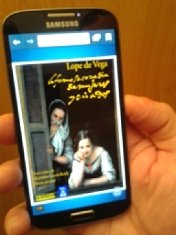
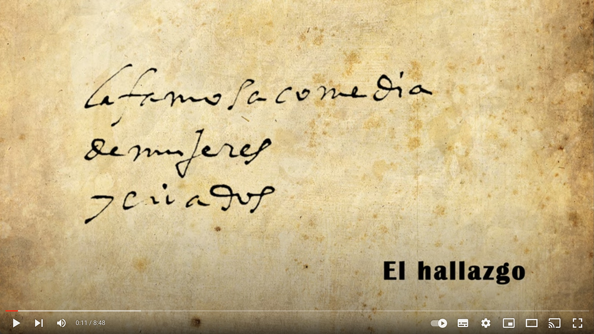
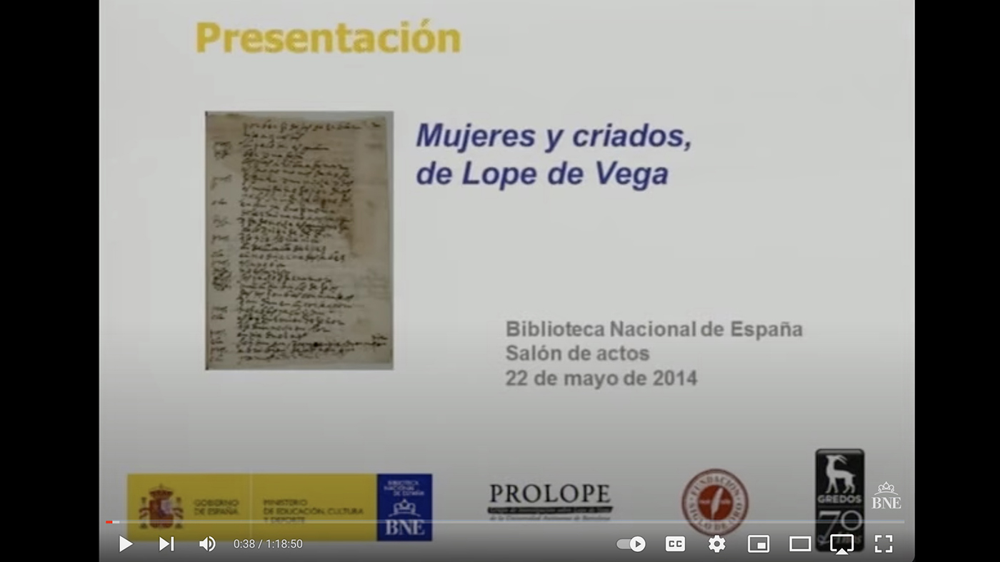
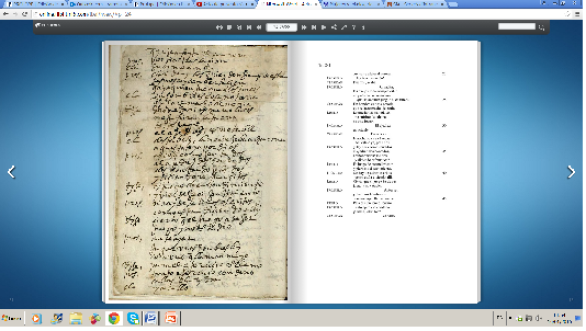

Tras el descubrimiento en la Biblioteca Nacional por parte de Alejandro García Reidy del manuscrito que contenía la copia de la obra perdida de Lope de Vega, PROLOPE le invitó a publicarla en el ámbito de nuestro grupo de investigación.

Aceptada la invitación, PROLOPE promovió la publicación en la Editorial Gredos, en nuestra «Biblioteca Lope de Vega» (la Editorial la publicó también en su «Biblioteca Universal»), y, conforme fue nuestro deseo, el texto se difundió también simultáneamente en nuestra página web, ofreciendo materiales y funcionalidades suplementarias (pues se ofrecían nuevos prólogos, imágenes del manuscrito con posibilidades de ampliación, búsqueda por palabras, etc.).
Esta edición en línea, que utiliza tecnología HTML5 y se puede consultar a través de ordenadores y de dispositivos móviles, ha sido posible gracias a un convenio con la BNE e incluye diferentes materiales:
- un prólogo audiovisual que se compone de dos vídeos alojados en YouTube;
- el libro virtual (con el texto editado por A. García Reidy, imágenes del manuscrito y varios preliminares);
- un archivo PDF descargable del texto, así como,
- bajo petición, un documento Word para facilitar la puesta en escena por grupos de teatro educativos y de aficionados sin ánimo de lucro.
Esta edición en línea ha sido un proyecto coordinado por S. Boadas y R. Valdés.
1. Prólogo audiovisual
1.a. La famosa comedia de Mujeres y criados. El hallazgo
En este videoclip de 00:08:48 se relata el proceso científico que condujo al hallazgo de Mujeres y criados y la posterior tarea de edición. Participan Alejandro García Reidy, así como María José Rucio, Jefa de Servicio de Manuscritos e Incunables de la BNE, y los directores de los grupos de investigación involucrados en el hallazgo y su difusión: Joan Oleza, Teresa Ferrer, Margaret Greer, Alberto Blecua, Gonzalo Pontón y Ramón Valdés. Interviene asimismo Rodrigo Arribas, de la compañía de teatro Fundación Siglo de Oro.

1.b. Acto de presentación del manuscrito de Mujeres y criados en la Biblioteca Nacional de España
El 22 de mayo de 2014, cuatro meses después de divulgarse la noticia del hallazgo del manuscrito, se presentó en la Biblioteca Nacional de España la edición crítica del texto a cargo de Alejandro García Reidy en Editorial Gredos, así como la edición en línea en la web de PROLOPE, y la primera lectura pública de varios fragmentos a cargo de Fundación Siglo de Oro. En el acto participaron Mar Hernández, que leyó palabras de Ana Santos, directora de la Biblioteca Nacional, José Manuel Martos (director de Editorial Gredos), Alberto Blecua (director de PROLOPE), Rodrigo Arribas (Fundación Siglo de Oro), y a continuación pronunció una conferencia el profesor Alejandro García Reidy (Syracuse University), con una selección de escenas que la ilustraron a la perfección, en la que los actores componentes de Fundación Siglo de Oro fueron dirigidos por Ernesto Arias. La conferencia de García Reidy funciona como una perfecta introducción a la comedia, dando cuenta detallada de su proceso de investigación, así como una sólida justificación de la atribución a Lope de la obra encontrada.

2. Libro virtual: Mujeres y criados, edición facsímil. Texto crítico de Alejandro García Reidy
El libro virtual contiene textos preliminares de María José Rucio (Jefa de la sección de manuscritos e incunables de la Biblioteca Nacional de España), Teresa Ferrer (directora de DICAT y CATCOM), Margaret R. Greer (directora de Manos Teatrales), y Sònia Boadas y Ramón Valdés (PROLOPE), coordinadores de este proyecto de edición en línea y este libro virtual.

A continuación se ofrece una breve introducción de Alejandro García Reidy a la que siguen ya las imágenes de las páginas del manuscrito de Pedro de Valdés custodiado en la Biblioteca Nacional y la correspondiente transcripción. En el libro virtual se pueden realizar búsquedas de texto así como ampliación de imagen sin pérdida de calidad. Puede consultarse desde ordenadores y desde diversos dispositivos como tabletas y teléfonos móviles.
3. Archivos descargables
Se ofrece el texto completo de Mujeres y criados en un archivo PDF para quien desee una lectura continua del texto sin las imágenes, pudiendo exportarlo y guardarlo donde más cómoda le resulte la consulta y la lectura.
4. Documento Word
El texto de Mujeres y criados se ofrece también en un documento Word para facilitar y promover proyectos colaborativos, especialmente los destinados a puestas en escena de aficionados y con intenciones pedagógicas y sin ánimo de lucro. Para estos proyectos será necesaria la presentación de una solicitud formal y motivada dirigida al Grupo de Investigación prolope@uab.cat. Las solicitudes serán estudiadas y atendidas por Alejandro García Reidy y el grupo de investigación PROLOPE.
Repositorio digital
Puede acceder al dossier de prensa de Mujeres y criados.